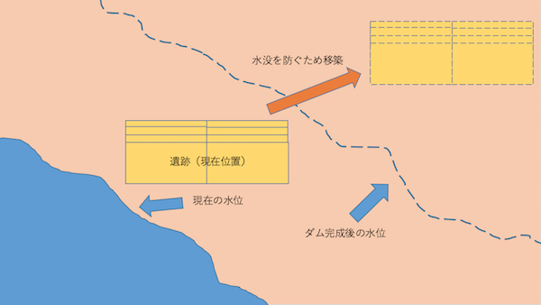
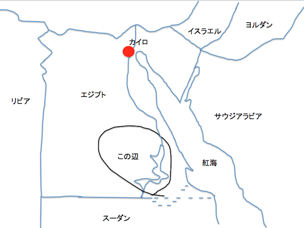

基本情報
アブ・シンベルからフィラエまでのヌビア遺跡群（Nubian Monuments from Abu Simbel to Philae）は、エジプト南部のナイル川流域にある、古代エジプト文明の遺跡。1960年代、エジプトでナイル川流域にアスワン・ハイ・ダムの建設計画が持ち上がったが、このダムが完成すると、ヌビア遺跡が水没する危機が懸念された。これを受けて、ユネスコが、ヌビア水没遺跡救済キャンペーンを開始。世界の60ヶ国の援助により、技術支援、考古学調査支援などが行われた。これがきっかけとなり、開発から歴史的価値のある遺跡、建築物、自然等を国際的な組織運営で守ろうという機運がうまれ、1972年11月16日、ユネスコのパリ本部で開催された第17回ユネスコ総会で、世界の文化遺産および自然遺産の保護に関する条約（世界遺産条約）が満場一致で成立。1975年、20ヶ国が条約締結し正式に発効した。ヌビア遺跡群も1979年、世界遺産（文化遺産）に登録された。（Wikipediaより引用）
遺跡郡に登録されている遺跡（代表的なもの）
- アブ・シンベル神殿 北緯22度20分12.42秒 東経31度37分31.56秒（Wikipediaより引用）
- フィラエ神殿 北緯24度01分31秒 東経32度53分03秒（Wikipediaより引用）
- カラブシャ神殿 北緯23度57分39秒 東経32度52分02秒（Wikipediaより引用）
いずれもヌビア水没遺跡救済キャンペーンによって移設された遺跡である。


エジプト
参考文献、URL
- "ヌビア遺跡".Wikipedia.2016-5-30.（日本語）,（インターネット）,https://ja.wikipedia.org/wiki/%E3%83%8C%E3%83%93%E3%82%A2%E9%81%BA%E8%B7%A1,（参照：2016-7-7）
- "アブ・シンベル神殿".Wikipedia.2016-5-30.（日本語）,（インターネット）,https://ja.wikipedia.org/wiki/%E3%82%A2%E3%83%96%E3%83%BB%E3%82%B7%E3%83%B3%E3%83%99%E3%83%AB%E7%A5%9E%E6%AE%BF,（参照：2016-7-7）
- "フィラエ神殿".Wikipedia.2016-5-30.（日本語）,（インターネット）,https://ja.wikipedia.org/wiki/%E3%83%95%E3%82%A3%E3%83%A9%E3%82%A8%E7%A5%9E%E6%AE%BF,（参照：2016-7-7）
- "Temple of Kalabsha".Wikipedia.2014-10-12.（English）,（インターネット）,https://en.wikipedia.org/wiki/Temple_of_Kalabsha,（参照：2016-7-7）
- "ヌビア水没遺跡救済キャンペーン".世界遺産検定のお勉強ブログ.2011-6-10.（日本語）,（インターネット）,http://ameblo.jp/uetaken4wh/entry-10904705120.html,（参照：2016-7-7）